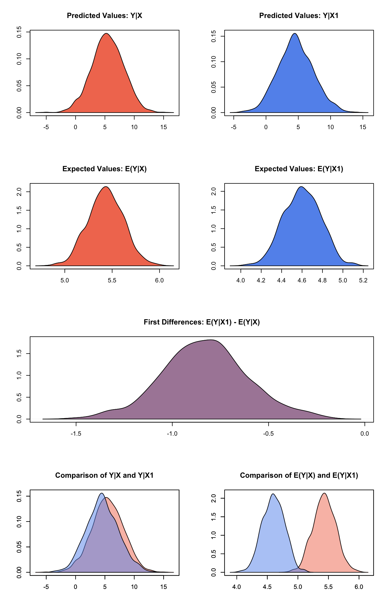

Least Squares Regression
2017-06-06
Built using Zelig version 5.1.1.90000
Least Squares Regression for Continuous Dependent Variables with ls.
Use least squares regression analysis to estimate the best linear predictor for the specified dependent variables.
Syntax
With the Zelig 4 compatibility wrappers:
z.out <- zelig(Y ~ X1 + X2, model = "ls", weights = w, data = mydata)
x.out <- setx(z.out)
s.out <- sim(z.out, x = x.out)For more details about the difference between Zelig’s reference classes and compatibility wrappers see the Quickstart Vignette.
The following examples typically use the compatibility wrappers.
Examples
Simple first differences
Load Zelig and attach example data frame:
library(Zelig)## Loading required package: survivaldata(macro)Estimate model:
z.out1 <- zelig(unem ~ gdp + capmob + trade, model = "ls", data = macro,
cite = FALSE)Summarize regression coefficients:
summary(z.out1)## Model:
##
## Call:
## z5$zelig(formula = unem ~ gdp + capmob + trade, data = macro)
##
## Residuals:
## Min 1Q Median 3Q Max
## -5.3008 -2.0768 -0.3187 1.9789 7.7715
##
## Coefficients:
## Estimate Std. Error t value Pr(>|t|)
## (Intercept) 6.181294 0.450572 13.719 < 2e-16
## gdp -0.323601 0.062820 -5.151 4.36e-07
## capmob 1.421939 0.166443 8.543 4.22e-16
## trade 0.019854 0.005606 3.542 0.000452
##
## Residual standard error: 2.746 on 346 degrees of freedom
## Multiple R-squared: 0.2878, Adjusted R-squared: 0.2817
## F-statistic: 46.61 on 3 and 346 DF, p-value: < 2.2e-16
##
## Next step: Use 'setx' methodSet explanatory variables to their default (mean/mode) values, with high (80th percentile) and low (20th percentile) values for the trade variable:
x.high <- setx(z.out1, trade = quantile(macro$trade, 0.8))
x.low <- setx(z.out1, trade = quantile(macro$trade, 0.2))Simulate first differences for the effect of high versus low trade on GDP:
s.out1 <- sim(z.out1, x = x.high, x1 = x.low)
summary(s.out1)##
## sim x :
## -----
## ev
## mean sd 50% 2.5% 97.5%
## 1 5.431973 0.1869131 5.430751 5.088196 5.798064
## pv
## mean sd 50% 2.5% 97.5%
## [1,] 5.467592 2.692446 5.409216 0.08244061 10.61921
##
## sim x1 :
## -----
## ev
## mean sd 50% 2.5% 97.5%
## 1 4.601547 0.1806391 4.603683 4.260526 4.933739
## pv
## mean sd 50% 2.5% 97.5%
## [1,] 4.60397 2.735845 4.567535 -0.4539401 10.2838
## fd
## mean sd 50% 2.5% 97.5%
## 1 -0.830426 0.2246132 -0.8328681 -1.296609 -0.3645703Plot the simulated distributions:
plot(s.out1)
Categorical variables, including fixed effects
Estimate a model with fixed effects for each country (see for help with dummy variables). Note that you do not need to create dummy variables, as the program will automatically parse the unique values in the selected variable into discrete levels.
z.out2 <- zelig(unem ~ gdp + trade + capmob + as.factor(country), model = "ls",
data = macro, cite = FALSE)Set values for the explanatory variables, using the default mean/mode values, with country set to the United States and Japan, respectively:
Simulate quantities of interest:
s.out2 <- sim(z.out2, x = x.US, x1 = x.Japan)and plot the results:
plot(s.out2)
Model Definition
- The stochastic component is described by a density with mean \(\mu_i\) and the common variance \(\sigma^2\)
\[ Y_i \; \sim \; f(y_i \mid \mu_i, \sigma^2). \]
- The systematic component models the conditional mean as
\[ \mu_i = x_i \beta, \]
where \(x_i\) is the vector of covariates, and \(\beta\) is the vector of coefficients.
The least squares estimator is the best linear predictor of a dependent variable given \(x_i\), and minimizes the sum of squared residuals, \(\sum_{i=1}^n (Y_i-x_i \beta)^2\).
Quantities of Interest Definition
- The expected value (
qi$ev) is the mean of simulations from the stochastic component,
\[ E(Y) = x_i \beta, \]
given a draw of \(\beta\) from its sampling distribution.
- In conditional prediction models, the average expected treatment effect (
att.ev) for the treatment group is
\[ \frac{1}{\sum_{i=1}^n t_i}\sum_{i:t_i=1}^n \left\{ Y_i(t_i=1) - E[Y_i(t_i=0)] \right\}, \]
where \(t_i\) is a binary explanatory variable defining the treatment (\(t_i=1\)) and control (\(t_i=0\)) groups. Variation in the simulations are due to uncertainty in simulating \(E[Y_i(t_i=0)]\), the counterfactual expected value of \(Y_i\) for observations in the treatment group, under the assumption that everything stays the same except that the treatment indicator is switched to :math: \(t_i=0\).
Output Values
The output of each Zelig function call contains useful information which you may view. For example, using the z.out1 object we estimated above, then you may see the coefficients by using get_coef:
z.out1$get_coef()## [[1]]
## (Intercept) gdp capmob trade
## 6.18129445 -0.32360059 1.42193926 0.01985421or the variance-covariance matrix with get_vcov:
z.out1$get_vcov()## [[1]]
## (Intercept) gdp capmob trade
## (Intercept) 0.203014830 -1.582154e-02 1.679720e-02 -2.014899e-03
## gdp -0.015821542 3.946360e-03 1.721017e-03 7.907613e-05
## capmob 0.016797200 1.721017e-03 2.770329e-02 4.025728e-05
## trade -0.002014899 7.907613e-05 4.025728e-05 3.142207e-05For a default summary of information use either
z.out1$summarize()## Model:
##
## Call:
## z5$zelig(formula = unem ~ gdp + capmob + trade, data = macro)
##
## Residuals:
## Min 1Q Median 3Q Max
## -5.3008 -2.0768 -0.3187 1.9789 7.7715
##
## Coefficients:
## Estimate Std. Error t value Pr(>|t|)
## (Intercept) 6.181294 0.450572 13.719 < 2e-16
## gdp -0.323601 0.062820 -5.151 4.36e-07
## capmob 1.421939 0.166443 8.543 4.22e-16
## trade 0.019854 0.005606 3.542 0.000452
##
## Residual standard error: 2.746 on 346 degrees of freedom
## Multiple R-squared: 0.2878, Adjusted R-squared: 0.2817
## F-statistic: 46.61 on 3 and 346 DF, p-value: < 2.2e-16
##
## Next step: Use 'setx' methodor as we saw before using the wrapper, e.g. summary(z.out1).
From the
zelig()output objectz.out, you may use the following ‘getter’ functions to extract:get_pvalueandget_se: p-values and standard errors, respectively.get_residuals: residuals.get_fitted: fitted values.get_df_residual: the residual degrees of freedom.get_model_data: the input data frame.You can extract the entire original fitted model object with
from_zelig_model. For example:
ls.original <- from_zelig_model(z.out1)You can then use summary and the component selector $ to extract:
-
coefficients: the parameter estimates with their associated standard errors, \(p\)-values, and \(t\)-statistics.\[\hat{\beta} \; = \; \left(\sum_{i=1}^n x_i' x_i\right)^{-1} \sum x_i y_i\]
-
sigma: the square root of the estimate variance of the random error \(e\):\[\hat{\sigma} \; = \; \frac{\sum (Y_i-x_i\hat{\beta})^2}{n-k}\]
-
r.squared: the fraction of the variance explained by the model:\[R^2 \; = \; 1 - \frac{\sum (Y_i-x_i\hat{\beta})^2}{\sum (y_i - \bar{y})^2}\]
adj.r.squared: the above \(R^2\) statistic, penalizing for an increased number of explanatory variables.cov.unscaled: a \(k \times k\) matrix of unscaled covariances.
For example:
ls.original <- from_zelig_model(z.out1)
summary(ls.original)$adj.r.squared## [1] 0.2816635